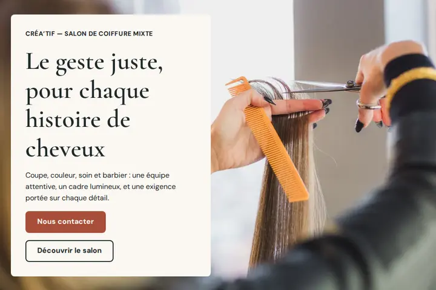

Développeur front-end indépendant
Simon COSTA
Des sites vitrines construits à partir de ce que vous dites vraiment.
Disponible pour de nouveaux projets.
À propos
J’ai 28 ans et je construis des sites vitrines. Avant le développement, j’ai travaillé en support helpdesk — un métier où l’on n’a pas le droit de mal comprendre. On vous décrit un symptôme, presque jamais la cause : il faut écouter pour de bon, reformuler jusqu’à ce que la personne dise « oui, c’est exactement ça », puis résoudre. Vite, et sans jargon.
C’est ce que j’ai gardé. Un projet de site commence rarement par un cahier des charges. Il commence par « je voudrais quelque chose de plus moderne », ou « mon site ne me ressemble plus ». Mon travail commence là : comprendre ce que vous cherchez vraiment à obtenir, avant d’écrire la première ligne de code.
Je me lance à mon compte, et ce que je propose est volontairement précis : des sites vitrines rapides, accessibles, qui tiennent sur tous les écrans. Pas de promesse démesurée — un travail soigné, vérifié, et une réalisation que vous pouvez regarder avant de décider.
Réalisations
Une première réalisation, consultable en ligne. D’autres viendront s’ajouter ici.
-

Démonstration
Créa’Tif — concept de salon de coiffure mixte
Un concept de salon fictif, réalisé en démonstration : quatre pages, navigation au clavier, photographies d’illustration, mise en page pensée pour tous les écrans. Aucun établissement de ce nom n’existe ; les coordonnées et disponibilités du site sont fictives.
Ce que je fais
Un périmètre volontairement resserré, sur ce que je sais livrer aujourd’hui.
-
Site vitrine
La création complète d’un site de présentation : structure des pages, mise en forme, contenus intégrés, prêt à être mis en ligne.
-
Refonte de pages
La reprise d’un site existant dont la présentation a vieilli ou qui tient mal sur téléphone, sans repartir de zéro.
-
Application web
De petits outils qui fonctionnent entièrement dans le navigateur, sans serveur à administrer ni abonnement à payer.
-
Mise en ligne
La publication du site et sa remise entre vos mains : hébergement, nom des pages, accès, et la marche à suivre pour le faire évoluer.
Techniquement : HTML, CSS et JavaScript écrits à la main, versionnés avec Git, publiés en statique. Deux exigences non négociables sur chaque projet — l’accessibilité au clavier et aux lecteurs d’écran, et des pages qui se chargent vite.
Discutons de votre projet
Décrivez-moi ce que vous avez en tête, même sans savoir comment le formuler — c’est précisément mon travail de le clarifier avec vous. Je réponds à tout le monde. Les projets sont chiffrés sur devis, adapté à chaque périmètre.
costa.simon30@outlook.com